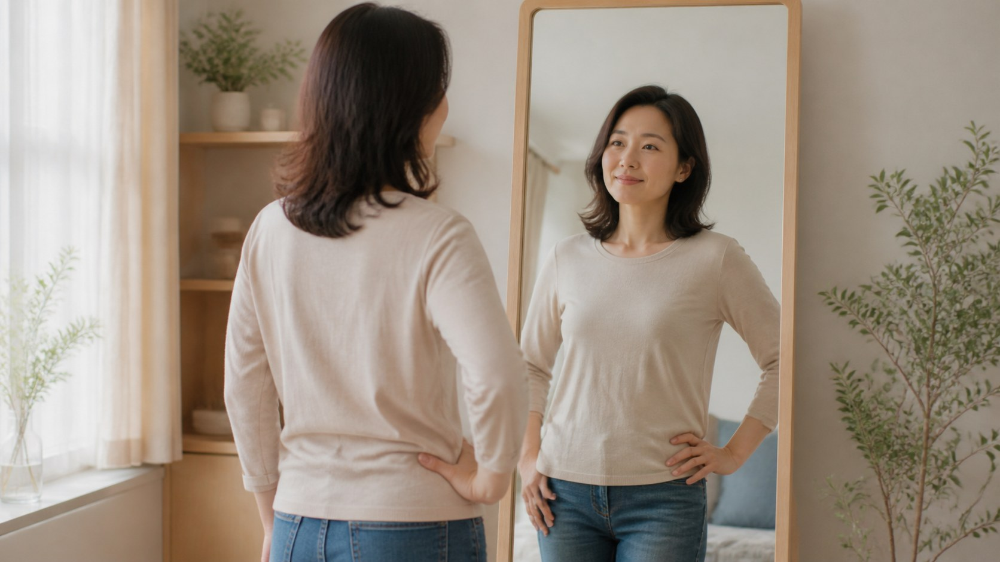

基础与美学
如何看待自己的身材｜从被要求变美，到主动接纳自己
你怎么看待自己的身材，往往比身材本身更影响心情。本文帮你分清"我想要"与"我被要求"，把容貌焦虑换回真正健康的自信。

一个人怎么看待自己的身材，往往比身材本身更能决定她的心情。就算两个人身材很接近，对自己的满意度也可能天差地别，因为这种看法带有很强的主观色彩。它就是我们常说的身体意象，也就是你对自己身体的整体看法和感受。
身体意象不等于客观长相，它是心理产物，由记忆、经历、他人的评价和社会的标准共同塑造。从小到大，我们听到的夸奖、受到的比较、看到的广告，都在一层层叠加成"我该长什么样"的认知。于是，真正的自己反而被这些声音慢慢盖住了。
所以第一步，是学着区分两个问题：这是我"想要"的，还是我被"要求"的？"我想要"出自内心，让我觉得舒服、有掌控感；"我被要求"则来自外界，让我不停地证明自己、讨好别人。分辨它，你才能看清，那些让你焦虑的执念，到底是不是你的本意。
容貌焦虑，常常就在"被要求"里生根。当对身材的不满持续很久，反复对照、逃避见人、影响情绪和日常生活时，那就不只是爱美，而是值得正视的焦虑。它和身高、体重关系没那么大，和内心那份"我不够好"的不安关系更大。看清这一点，焦虑才不会继续牵着人走。
接纳自己，也不等于放弃变好。接纳是看清现状，是停止拿别人的尺子量自己，是明白"我不必证明自己"。恰恰是这份从容，让你能安心地做真正有利于健康的选择，而不是被焦虑推着去改变。退一步，反而更有力气。
你也可以对自己温柔一点，试试这几件小事：每天记下一两个喜欢自己的地方；给屏幕和滤镜设定一点边界；在冲动下单前问一句"这是我想要的吗"；运动时，把目的从"惩罚身材"换成"取悦身体"。它们都不难，却能在日复一日里重建你和身材的关系。
健康的自信，来自对身体的尊重。是这副身体能工作、能生活、能陪伴你走过每一天，这样一副身体本身就值得被好好对待。当你不再把大量精力耗在"够不够好"上，生活的宽度会被慢慢打开。
所以，看待自己的身材，请从"被要求变美"回到"主动接纳自己"。如果你正被身材焦虑困扰，先照顾情绪，再谈改变；必要时，也可以听听专业心理或医美咨询的意见。身体是你的，标准是你定的。
本文用于公众健康教育，不构成医疗建议，不替代面诊。医美决策请与具备资质的医师面诊后作出。